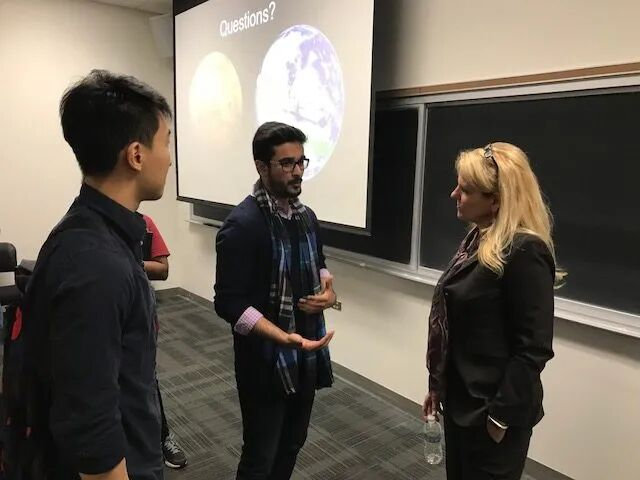
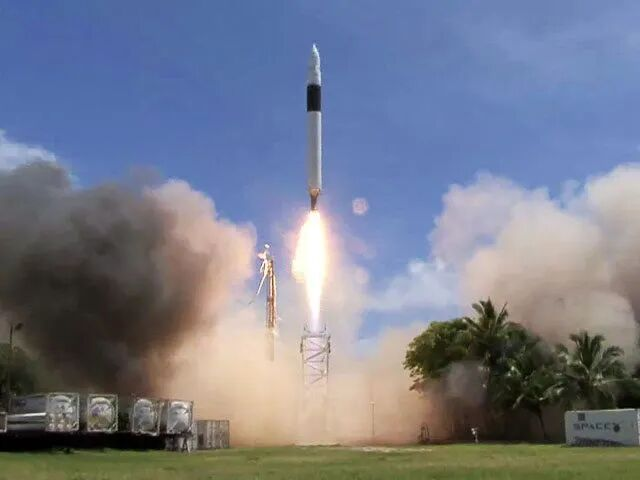
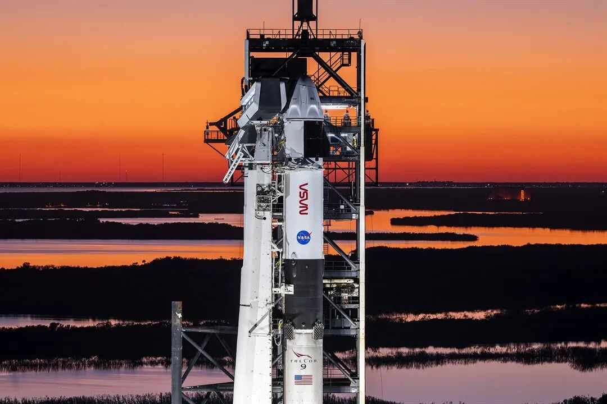
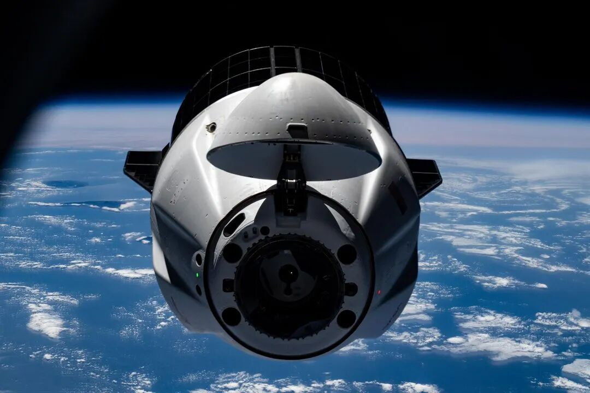

🚀 SpaceX敲钟的那一刻 站在台上的不是马斯克
At SpaceX IPO, It's Not Musk Standing on Stage
小 书 包·人 物 故 事
格 温 · 肖 特 韦 尔 与 西 北 大 学
2026年6月12日，美国纳斯达克交易所exchange[ɪksˈtʃeɪndʒ] n. 交易所。
SpaceX正式上市，融资fundraising[ˈfʌndreɪzɪŋ] n. 融资
，创下人类历史上最大规模IPO纪录record[ˈrekɔːd] n. 纪录。公司估值valuation[ˌvæljuˈeɪʃən] n. 估值超过
，成为地球上最值钱的上市公司listed[ˈlɪstɪd] adj. 上市的之一。
全世界都在等着看马斯克出现appear[əˈpɪər] v. 出现。
但站在纳斯达克交易大厅、亲手敲响strike[straɪk] v. 敲响开市钟的，是另一个人。
在此之前，她在伊利诺伊州的郊区suburb[ˈsʌbɜːb] n. 郊区长大，在西北大学读机械工程，差点去了底特律造汽车。
西北大学 机械工程 SpaceX总裁
格温·肖特韦尔1963年生于伊利诺伊州
从小，她就喜欢拆disassemble[ˌdɪsəˈsembl] v. 拆解东西、修自行车。但"工程师engineer[ˌendʒɪˈnɪər] n. 工程师"这个词，从没出现在她对未来的想象里。
直到高中某一天，她妈妈带她去参加一场女工程师协会association[əˌsəʊsiˈeɪʃən] n. 协会的活动。
1979年，伊利诺伊理工学院 · 女工程师协会活动
台上坐着一位女性机械machine[məˈʃiːn] n. 机械工程师。她经营着自己的公司，研发环保建筑材料，同时涉足太阳能solar[ˈsəʊlə] adj. 太阳能的。
格温说，她被这位女士深深吸引attract[əˈtrækt] v. 吸引——不只是因为她的事业，也因为她穿的那套西装。
"我当时是个臭脾气的青少年teenager[ˈtiːneɪdʒə] n. 青少年，根本不想去那个活动。但台上有一位女性机械工程师，我被她迷住fascinate[ˈfæsɪneɪt] v. 迷住了。她拥有自己的公司，她在开发环保建材material[məˈtɪəriəl] n. 建材，她还涉及太阳能。我喜欢她所做的一切，但我也爱她穿的那套西装suit[sjuːt] n. 西装。"
—— 格温·肖特韦尔，接受《卫星周刊》采访
就这样，一套西装，让一个漫无目标的高中生，找到了方向direction[dɪˈrekʃən] n. 方向。

2017年，格温回到西北大学工程科学与应用数学系，与学生交流communicate[kəˈmjuːnɪkeɪt] v. 交流。图源：Northwestern Engineering
📌 西北大学麦考密克工程engineering[ˌendʒɪˈnɪərɪŋ] n. 工程学院
位于伊利诺伊州埃文斯顿，毗邻芝加哥，是美国顶尖top[tɒp] adj. 顶尖的的工程学院之一。格温的家乡就在这里附近，她在这里完成了机械工程学士（1986年，优等生）和应用数学硕士master[ˈmɑːstə] n. 硕士（1988年）两个学位，至今仍是该学院顾问委员会成员，也是西北大学的校董。
1986年，格温从西北大学以优等生身份毕业graduate[ˈɡrædʒueɪt] v. 毕业，拿到机械工程学士学位。
她的第一份工作，不是航天aerospace[ˈeərəʊspeɪs] n. 航天，而是汽车。她去了密歇根州的克莱斯勒汽车automotive[ˌɔːtəˈməʊtɪv] adj. 汽车的公司。
但她很快发现：她想做真正的工程，不是坐在会议conference[ˈkɒnfərəns] n. 会议室里开会。
于是她辞职resign[rɪˈzaɪn] v. 辞职，从底特律回到伊利诺伊州，回到母校西北大学，在学校研究中心担任助理的同时攻读硕士，1988年拿到应用数学硕士学位。
毕业后，她来到洛杉矶，加入了航天研究机构institution[ˌɪnstɪˈtjuːʃən] n. 机构"航空航天公司"（Aerospace Corporation）。接下来是整整十年：卫星satellite[ˈsætəlaɪt] n. 卫星热分析、航天飞机集成、航天器设计……她在这里成为了一名真正意义上的航天工程师。
2002年：加入join[dʒɔɪn] v. 加入一家没人认识的小公司
2002年，一位老同事colleague[ˈkɒliːɡ] n. 同事打来电话：有个叫
那年，格温38岁。SpaceX还不到一年，既没有上过天，也没有任何人知道aware[əˈweə] adj. 知道的这家公司。
她成为了SpaceX早期核心骨干backbone[ˈbækbəʊn] n. 骨干——第11号员工。职位：商务开发副总裁vice[vaɪs] pref. 副的。
她的任务是：在这家公司还没发射成功任何一枚火箭rocket[ˈrɒkɪt] n. 火箭之前，说服客户买票。
"马斯克负责造梦，格温负责让梦落地land[lænd] v. 落地；实现。她建立的行业industry[ˈɪndəstri] n. 行业关系网，打开了政府机构和早期客户的大门——那时候，马斯克在航天圈还是个陌生人。"
—— Reuters，2026年6月
2008年：三次失败failure[ˈfeɪljə] n. 失败之后，那个让SpaceX活下去的电话
SpaceX的第一枚火箭，叫猎鹰falcon[ˈfɔːlkən] n. 猎鹰1号（Falcon 1）。
2006年3月，第一次发射：燃油泄漏leak[liːk] n./v. 泄漏起火，失败。
2007年，第二次发射：仍然still[stɪl] adv. 仍然失败。
2008年8月，第三次发射：再次again[əˈɡen] adv. 再次失败。
公司现金cash[kæʃ] n. 现金告急。马斯克说，他已经快把自己所有entire[ɪnˈtaɪə] adj. 所有的的钱都投进去了。整个团队team[tiːm] n. 团队不知道下一步怎么办。
2008年9月：第四次发射，猎鹰1号终于进入轨道orbit[ˈɔːbɪt] n. 轨道 · 格温说："整个房间爆发出欢呼。外面有上千人在哭cry[kraɪ] v. 哭、在跳、在叫。"

2008年9月28日，Falcon 1第四次发射成功success[səkˈses] n. 成功进入轨道。图源：SpaceX / Wikimedia Commons
就在那一年，格温带领团队拿下了一份改变公司命运的合同contract[ˈkɒntrækt] n. 合同：
NASA同意agree[əˈɡriː] v. 同意支付SpaceX
，用来向国际空间站运送物资supply[səˈplaɪ] n. 物资。
这笔钱，让SpaceX活survive[səˈvaɪv] v. 活下来了下来。
马斯克随即将格温提升为总裁兼首席运营官COO[siː əʊ əʊ] n. 首席运营官。

Falcon 9与Dragon飞船在肯尼迪航天中心发射台platform[ˈplætfɔːm] n. 发射台。图源：NASA / SpaceX
格温在SpaceX担任商务负责人期间，将猎鹰火箭的订单order[ˈɔːdə] n. 订单积压量建立到约170次发射，合同总价值超过200亿美元。她同时负责谈判了NASA的商业载人航天协议——正是这一协议，让SpaceX自2020年起开始将宇航员astronaut[ˈæstrənɔːt] n. 宇航员送往国际空间站。

SpaceX Dragon货运cargo[ˈkɑːɡəʊ] n. 货运飞船接近国际空间站，执行NASA商业补给任务。图源：NASA
马斯克造火箭，格温管manage[ˈmænɪdʒ] v. 管理马斯克
在SpaceX，同事们给格温的评价assess[əˈses] v. 评价，有一个词反复出现：
马斯克是那个提出疯狂想法的人，格温是那个把疯狂变成可以运转的系统system[ˈsɪstəm] n. 系统的人。她管运营operations[ˌɒpəˈreɪʃənz] n. 运营、管客户、管政府关系，也在马斯克的公开言论引发争议时，一次次站出来稳住局面。
同事们说，她还发展出了一项更罕见的技能skill[skɪl] n. 技能：管理马斯克本人。
"我希望自己对埃隆有帮助，能增加价值value[ˈvæljuː] n. 价值。"
—— 格温·肖特韦尔，接受《时代》杂志采访，2026年
2026年6月12日，SpaceX上市listing[ˈlɪstɪŋ] n. 上市。
马斯克在德克萨斯州星际基地通过视频屏幕screen[skriːn] n. 屏幕出现。
亲手在纽约纳斯达克敲钟bell[bel] n. 钟的，是格温。
这不是一个意外，而是一个隐喻metaphor[ˈmetəfɔː] n. 隐喻：SpaceX过去24年的每一步实际运作，都是她在执行。
格温·肖特韦尔从来没想过要去航天spaceflight[ˈspeɪsflaɪt] n. 航天。
她在一场无聊boring[ˈbɔːrɪŋ] adj. 无聊的的活动上，爱上了一套西装。
然后差点去了底特律造汽车vehicle[ˈviːɪkl] n. 汽车。
然后在一家没人认识的小公司firm[fɜːm] n. 公司里，花了24年，
西北大学给了她系统和精确precision[prɪˈsɪʒən] n. 精确。
SpaceX给了她一个足够大的舞台stage[steɪdʒ] n. 舞台。
而那套西装，给了她一个开始beginning[bɪˈɡɪnɪŋ] n. 开始。
有时候，改变方向的，不是一所大学，不是一份规划plan[plæn] n. 规划，
而是某个周末weekend[ˌwiːkˈend] n. 周末，你妈妈带你去的那场，
小书包系列 · 名人与名校 · 2026
全文所有事实均经查证 · 来源：NASA · Reuters · 西北大学官方资料